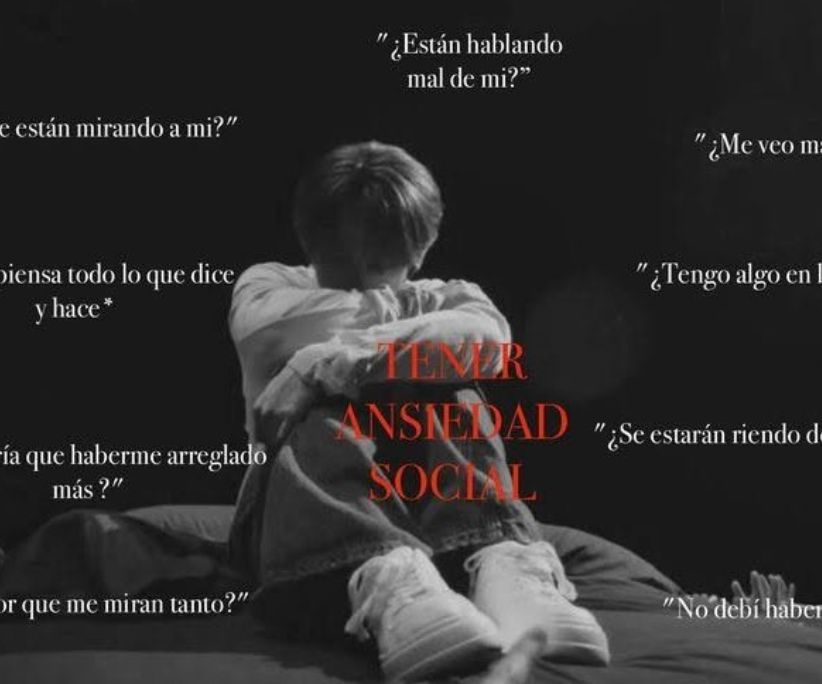

Entre Pensamientos con Vanessa
Muchas veces, el sobrepensar hace que aparezcan pensamientos de miedo e inseguridad, como: “¿y si digo algo raro?” o “¿y si piensan mal de mí?”. A partir de eso, se empieza a analizar cada palabra antes de decirla, cada movimiento y cada reacción. Y después de pensarlo tanto, las palabras se quedan atoradas en tu mente y nunca salen.
La ansiedad social no significa no querer convivir o relacionarte con los demás, sino que se te hace más difícil que los demás. Incluso puede que tu deseo de interactuar con los otros sea grande, pero el miedo siempre te invade y le gana a ese deseo.
Con el tiempo, el sobrepensar se vuelve agotador. Te deja incómodo sobre ti mismo y empieza a generar inseguridad. Sin embargo, no todo lo que piensas es real. No todos están observando cada cosa que haces ni juzgándola. Pensar o ser diferente no significa que no puedas encajar. Aunque cada persona comparta ciertas cualidades, todos tienen una esencia propia, y eso esta bien
Hay una gran diferencia entre ser tímido y tener ansiedad social. Cuando alguien tiene ansiedad social, sobrepiensa cada palabra y cada acción por miedo a ser juzgado por los demás. Incluso antes de hablar, puede sentir que ya dijo algo mal. Normalmente, las personas con ansiedad social evitan participar, prefieren el silencio o se sienten incómodas incluso con gente que conocen. No porque no quieran estar ahí, sino porque su mente no deja de analizarlo todo, lo cual les causa inseguridad y cansancio emocional constante.
NO TODO LO QUE PIENSAS ES REAL
Lo más difícil es que, todo parece estar bien, pero por dentro hay una montaña rusa de pensamientos. "¿Convivir o no convivir?" Esto es gracias a la lucha constante del deseo de pertenecer a un grupo y el miedo al rechazo. Incluso puede que gracias al miedo, termines evitando el hablar con los demás. Sin embargo, quiero que sepas algo. Está bien si a veces te cuesta hablar. Está bien si necesitas más tiempo para sentirte cómodo con otras personas. No tienes que forzarte a ser alguien que no eres solo para encajar.
El aceptarte tal y como eres, puede ayudarte a encontrar a las personas correctas con las que realmente puedas conectar. Incluso puede volverse más sencillo con el paso del tiempo. Al final del día, no se trata de dejar de sentir ese miedo, sino de aprender a manejarlo. Porque tu forma de ser, incluso con dudas, también merece un lugar el cual pertenecer